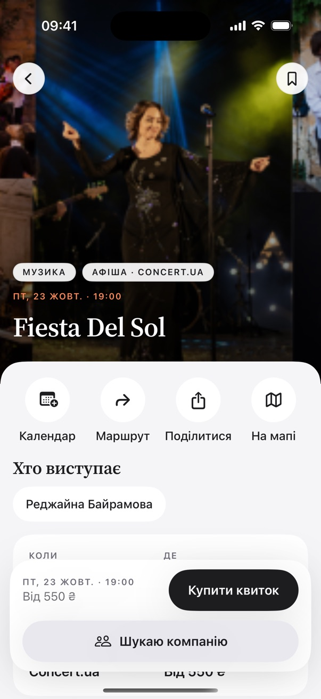
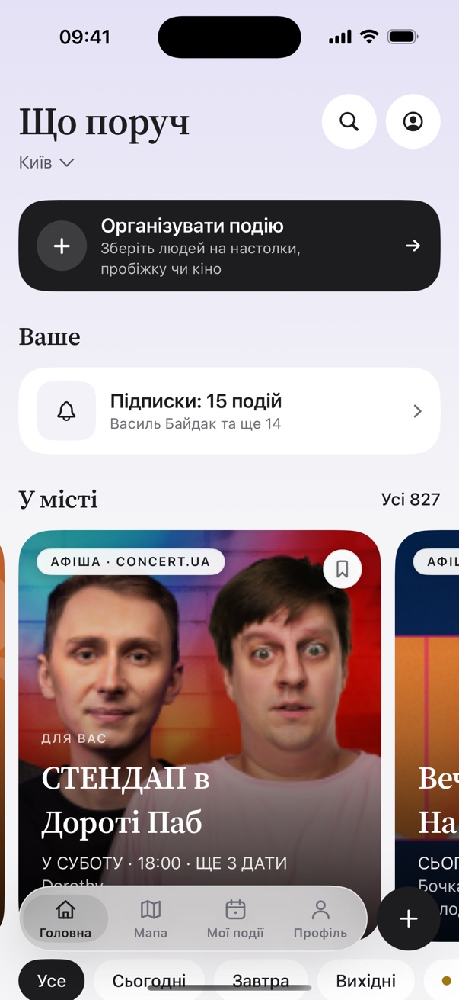
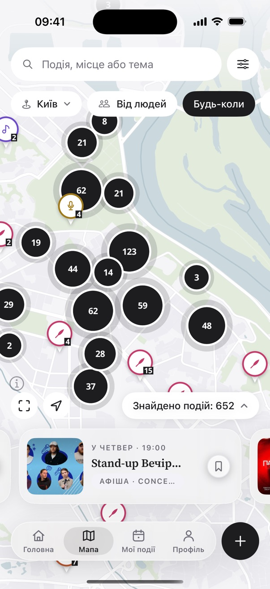
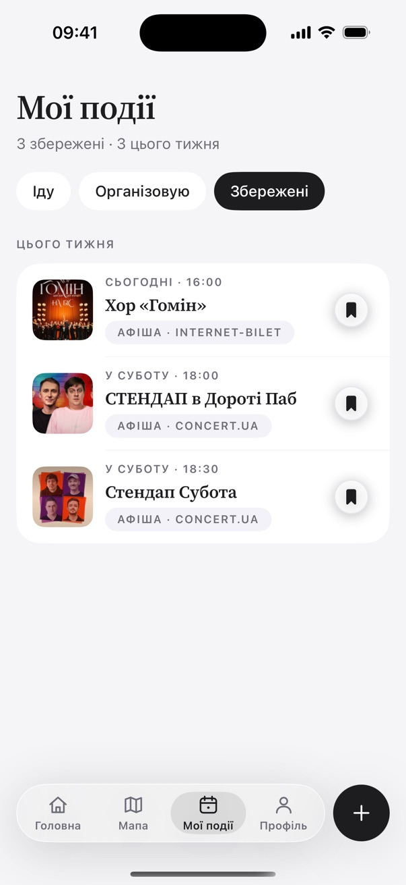
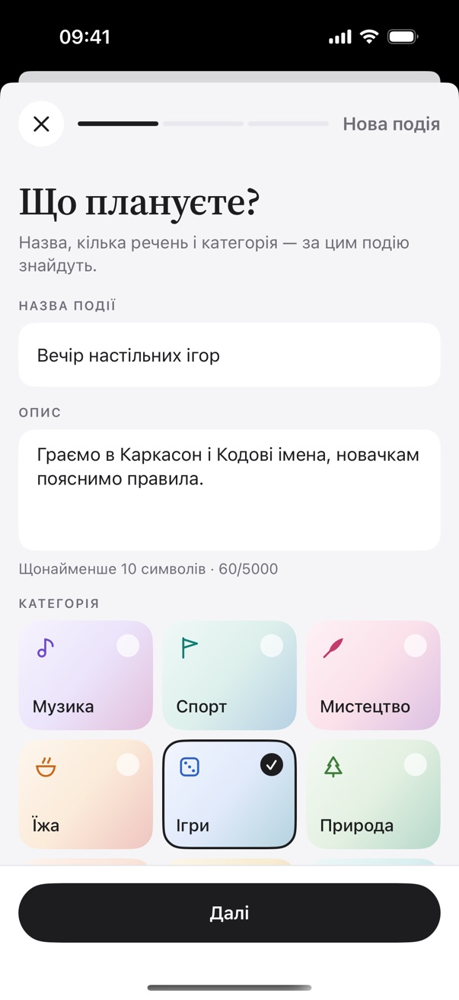

01 · Мапа
Мапа замість стрічки
Сотні подій міста з кластерами за категоріями. Фільтри «сьогодні», «вихідні», «є вільні місця».
Знаходьте на мапі, приєднуйтесь, створюйте власні.




Сотні подій міста з кластерами за категоріями. Фільтри «сьогодні», «вихідні», «є вільні місця».
Концерти та вистави з квиткових сервісів поруч із зустрічами, які створюють люди.
Афішні події беруться з відкритих джерел із зазначенням джерела; квитки купуються на сайті організатора.
Опис, точка на мапі, час і місткість. Черга очікування, підтвердження учасників, вікові межі.
